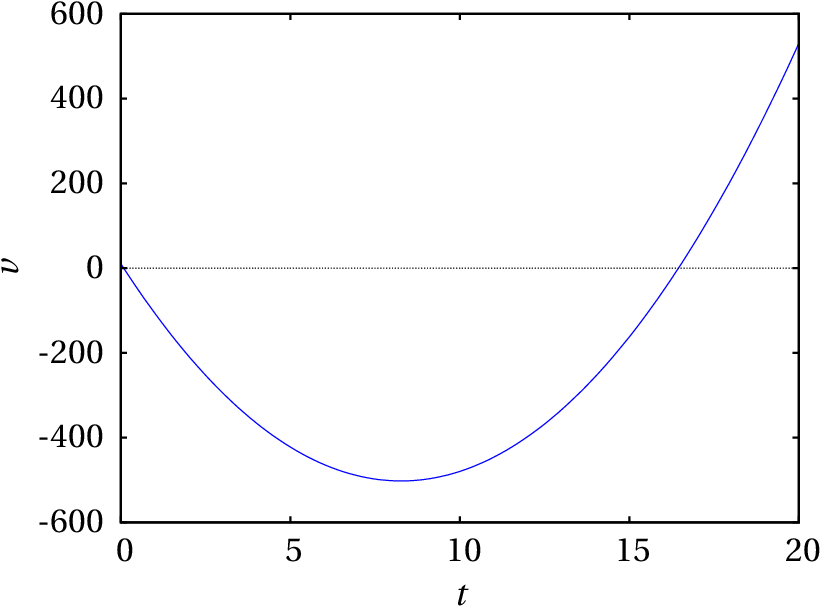
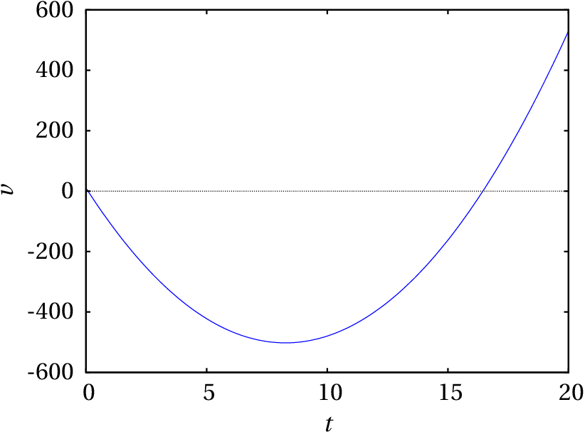

A cinemática é a análise do movimento sem consideração das suas causas. No caso das corredoras na fotografia, o movimento dos braços e pernas é oscilante, enquanto que o movimento da cabeça é mais aproximadamente uniforme e, por isso, mais fácil de descrever; basta contabilizar o deslocamento horizontal da cabeça, em função do tempo. Para descrever o movimento das pernas, para além de considerar o deslocamento horizontal, é necessário considerar a variação de algum ângulo em função do tempo.
Um objeto encontra-se em movimento se a sua posição for diferente em diferentes instantes; se a posição permanece constante, o objeto está em repouso. Para medir a posição do objeto, é necessário usar um referencial; nomeadamente, outros objetos usados como referencia. Se a posição do corpo em questão varia em relação ao referencial, o corpo está em movimento em relação a esse referencial. Assim, o movimento é um conceito relativo, já que um objeto pode estar em repouso em relação a um dado referencial, mas em movimento em relação a um outro referencial.
Cada ponto num objeto em movimento ocupa diferentes posições do espaço, em diferentes instantes de tempo . O conjunto de posições do ponto, em todos os instantes num intervalo , define uma curva chamada trajetória do ponto.
A trajetória de qualquer ponto é sempre uma curva contínua; ou seja, as posições do ponto em ou podem estar tão próximas quanto quisermos, se escolhermos um incremento de tempo suficientemente pequeno.
O movimento mais simples de um corpo rígido, de translação sem rotação, é quando todos os pontos do corpo seguem trajetórias idênticas (ver figura 1.1). Assim sendo, basta estudar o movimento de um único ponto para conhecer o movimento do corpo rígido.

No movimento de rotação em torno de um eixo, todos os pontos num eixo permanecem em repouso e os outros pontos deslocam-se. Na segunda parte na figura 1.1, o martelo rodou em torno de um eixo perpendicular à página. Nesse tipo de movimento as trajetórias de pontos diferentes já não são idênticas mas todas elas são arcos de círculo, com o mesmo ângulo, que só diferem no valor do raio. Basta saber como varia o ângulo de rotação para descrever o movimento de qualquer ponto no corpo.
Um movimento mais complicado é a sobreposição de translação e rotação em torno de um eixo (terceira parte na figura 1.1). Nesse caso, as trajetórias do diferentes pontos do corpo são curvas diferentes. No entanto, esse movimento mais complicado pode ser descrito apenas com a trajetória de um ponto qualquer do corpo e a variação do ângulo de rotação de uma reta qualquer no corpo; com efeito, o ângulo de rotação é o mesmo para qualquer segmento no corpo rígido e após fixar a posição do ponto num instante e o ângulo de rotação, consegue dizer onde estarão todos os outros pontos do corpo nesse instante.
Existe também outro tipo de rotação mais geral, rotação à volta de um ponto, em que um único ponto permanece em repouso. Nesse caso as trajetórias dos diferentes pontos são curvas na superfície de uma esfera com centro no ponto em repouso. A forma mais conveniente de descrever esse tipo de movimento consiste em determinar a variação de três ângulos. O caso mais geral do movimento de um corpo rígido consiste na sobreposição de translação e rotação à volta de um ponto. Nesse caso será necessário conhecer a trajetória de um ponto do corpo e a variação de três ângulos.
Os graus de liberdade de um sistema são as variáveis necessárias para determinar a sua posição exata. Por exemplo, para determinar a posição de uma mosca numa sala "retangular", podem medir-se as suas distâncias até o chão e duas paredes perpendiculares da sala, dando origem a um sistema de três coordenadas perpendiculares (coordenadas cartesianas ou retangulares), que se costumam designar pelas letras , e (figura 1.2).

Ou seja, o movimento de um ponto no espaço está associado a 3 graus de liberdade. A trajetória do ponto é uma curva no espaço, que pode ser descrita indicando as expressões para as 3 coordenadas cartesianas , e em função do tempo. Como o movimento mais geral de um corpo rígido é a sobreposição do movimento de um ponto e variação de três ângulos, esse movimento tem 6 graus de liberdade: 3 coordenadas que descrevem o movimento do ponto, mais os 3 ângulos que descrevem a rotação. Outros movimentos mais simples possuem menos graus de liberdade; a rotação em torno de um eixo fixo tem apenas um grau de liberdade, a translação sem rotação 3 graus de liberdade e a translação com rotação em torno de um eixo fixo está associada a 4 graus de liberdade.
Neste capítulo estuda-se apenas o movimento de um ponto. Esse estudo será suficiente para descrever a translação dos corpos rígidos e servirá de base para estudar movimentos mais complexos.
Quando um ponto está limitado a seguir uma trajetória pré determinada, o movimento desse ponto têm um único grau de liberdade. Por exemplo, no movimento de cada uma das rodas de um carrinho nos carris de uma montanha russa, enquanto o carrinho siga os carris sem perder o contacto com eles, o movimento do centro da roda segue uma curva determinada. Se a posição do ponto num instante inicial é conhecida, para determinar a posição em qualquer outro instante basta saber o deslocamento ao longo dos carris, desde o instante inicial até esse instante.
No movimento de translação de um automóvel numa autoestrada poderá ser suficiente um único grau de liberdade (figura 1.3). Se o automóvel sofrer uma avaria e o condutor tiver que telefonar para pedir um reboque, basta dizer em que quilómetro da autoestrada se encontra para que o condutor do camião de reboque saiba para onde se dirigir. Assim, o movimento dos automóveis na autoestrada é caraterizado por um único grau de liberdade, o deslocamento ao longo da estrada.
De referir que o deslocamento na estrada não é medido em linha reta, mas ao longo de uma curva no espaço; no entanto, como a forma detalhada dessa curva já está estabelecida, basta uma variável para descrever a posição em cada instante. Em outros casos poderá ser necessário descrever a variação de outros graus de liberdade, por exemplo, a distância à berma da estrada. Se o automóvel fosse perfeitamente rígido e sempre em contacto com a estrada, a descrição completa do movimento seria feita incluindo também um ângulo. Na prática há sempre muitos mais graus de liberdade porque não existem corpos perfeitamente rígidos.
Se um ponto está limitado a deslocar-se sobre uma superfície, basta usar duas coordenadas para determinar a sua posição e o seu movimento tem dois graus de liberdade.
Um biólogo a seguir o movimento de uma raposa num território terá apenas de medir a sua longitude e latitude, por exemplo, com um dispositivo de GPS, para indicar o ponto onde se encontra em cada instante. Não são necessárias 3 variáveis, mas apenas duas, se o mapa topográfico da região for conhecido, permitindo localizar um ponto apenas com a sua longitude e latitude; uma terceira variável, a altura, tem um valor pré determinado de acordo com a topografia do terreno, como no exemplo da figura 1.4. Realmente há um terceiro grau de liberdade, a altura sobre a superfície do terreno, mas como essa altura terá variações insignificantes comparada com as variações da latitude e longitude, poderá não ter relevância.
Consequentemente, o movimento da raposa é um movimento com dois graus de liberdade, porque bastam duas coordenadas para determinar a posição. A latitude e a longitude na superfície do terreno não são realmente distâncias mas sim ângulos com vértice no centro da Terra, mas continuam a ser dois graus de liberdade que podem ter diferentes valores em diferentes instantes.
Regressando ao exemplo inicial do voo da mosca, que foi considerada como um único ponto em movimento com 3 coordenadas , e , a mosca também pode mudar a sua orientação. Para definir a orientação da reta segundo o corpo da mosca podem usar-se 2 ângulos e é necessário um terceiro ângulo para indicar a rotação da mosca em relação a essa reta; ao todo são 6 graus de liberdade. Mas a mosca pode também esticar ou dobrar o corpo e abrir ou fechar as asas, por exemplo, pelo que, do ponto de vista físico, tem muitos mais graus de liberdade. Se a mosca for modelada com 3 corpos rígidos: as duas asas e o bloco constituído por cabeça, tórax e abdómen, para descrever o movimento do primeiro corpo rígido — cabeça, tórax e abdómen — são precisos os seis graus de liberdade já descritos. Cada asa acrescenta outros 3 graus de liberdade — os ângulos da rotação à volta de um ponto fixo onde a asa está ligada ao tórax — tendo no total 12 graus de liberdade.
Neste capítulo considera-se apenas o movimento com um grau de liberdade, no qual a trajetória é uma curva conhecida. Para determinar a posição na trajetória, , escolhe-se como origem um ponto qualquer da trajetória (ponto onde ) e arbitra-se sinal positivo para os pontos a um dos lados da origem e negativo para os pontos no outro lado. A posição num ponto da trajetória é o comprimento de arco da trajetória, desde o ponto até à origem, com sinal positivo ou negativo segundo o lado onde estiver o ponto.
A posição é uma função do tempo , porque em cada instante o objeto só pode estar num ponto e é uma função contínua: se num instante o objeto encontra-se na posição , e num instante posterior, , a posição é , então o objeto deverá ter passado por todas as posições no intervalo , em intantes no intervalo . Define-se o deslocamento ao longo da trajetória, , no intervalo , igual a:
E a velocidade média, , nesse intervalo de tempo, é, por definição, igual ao deslocamento por unidade de tempo:
O deslocamento e a velocidade média podem ser positivos ou negativos. Se o deslocamento e a velocidade são positivos, quer dizer que o movimento é no sentido positivo em que se mede ; caso contrário, o movimento é no sentido negativo. O valor absoluto da velocidade, é a rapidez com que se desloca o objeto. As unidades da velocidade são distância sobre tempo: por exemplo, metros por segundo, m/s, ou quilómetros por hora, km/h. Também é aceite (mas não obrigatório) escrever m·s-1 ou km·h-1, usando um ponto para indicar o produto entre unidades.
Um passageiro num autocarro que se desloca numa autoestrada toma nota da hora de passagem por alguns dos sinais de demarcação quilométrica da via, obtendo os valores na seguinte tabela:
| hora | 14:15 | 14:50 | 15:30 | 15:45 | 16:15 |
| km | 0 | 60 | 90 | 100 | 140 |
Calcule a velocidade média em cada intervalo e represente os gráficos da posição na trajetória e da velocidade média.
Resolução. Passando os tempos da tabela de horas:minuto para horas, a sequência dos 5 tempos é:
Essa sequência pode ser introduzida no programa Maxima como uma lista (consulte o apêndice A):
Como é referido no apêndice, optou-se por mostrar os números de vírgula flutuante arredondados a 4 algarismos significativos, embora internamente possam ter até 16 algarismos.
A sequência de posições ao longo da trajetória, em km, é:
que pode ser inserida numa lista e associada à variável s no Maxima:
Há quatro intervalos entre os 5 instantes de tempo registados. As velocidades médias nesses 4 intervalos calculam-se aplicando a equação 1.2, com a variar entre 1 e 4. Isso pode se feito usando a função makelist do Maxima:
em unidades de km/h.
O gráfico da posição em função do tempo pode ser criado com a função plot2d:
O resultado mostra-se na figura 1.5. Usou-se a opção "y" de plot2d, para que o contradomínio não fica-se, por omissão, entre 0 e 140, colocando assim o primeiro e último ponto por cima dos eixos. A opção [style, linespoints] faz com que sejam colocados pontos na lista de pontos dados e esses pontos sejam também interligados por segmentos de reta.

Como é uma função contínua, o seu gráfico deve ser uma curva que passa pelos pontos apresentados na figura 1.5, mas com a informação disponível não é possível determinar a forma exata dessa curva; usaram-se segmentos de reta para dar uma ideia aproximada de como deveria ser a função. As quatro velocidades médias, obtidas com a equação 1.2, são os declives dos quatro segmentos de reta no gráfico 1.5.
Para traçar o gráfico da velocidade média em função do tempo, há que ter em conta que cada uma das 4 velocidades médias foi calculada num intervalo de tempo e, por isso, o seu valor deve ser atribuído a todos os pontos no respetivo intervalo. O gráfico será então como uma escada com 4 degraus horizontais a diferentes alturas. Para traçar o gráfico precisamos de 8 pontos: ( , ), ( , ), ( , ), ( , ), ( , ), ( , ), ( , ) e ( , ), já que os 3 instantes intermédios , e cada um faz parte de dois intervalos.
Usando a função ceiling do Maxima, que arredonda um número real para o menor inteiro superior ao número, a lista desses oito pontos pode obter-se como o comando seguinte:
A função plot2d, que já foi usada dando a lista de coordenadas das abcissas seguida da lista das ordenadas, também aceita uma lista de pares [abcissa, ordenada] como a lista p criada no comando anterior. Como tal, o gráfico da velocidade média é obtido assim:
A figura 1.6 mostra o resultado.

Um gráfico da velocidade média , como o do exemplo anterior (figura 1.6), apresenta vários problemas. Primeiro, há descontinuidades na fronteira entre os intervalos de tempo, que foram representadas por segmentos verticais; por exemplo, em , terá algum valor indeterminado entre km/h e km/h.
Outro problema é que o gráfico de vs não dá informação precisa sobre o verdadeiro movimento do autocarro. Por exemplo, no segundo intervalo, entre as 14:50 e as 15:30, o gráfico 1.6 sugere que o autocarro andou com velocidade constante 45 km/h, durante 40 minutos, percorrendo assim km. Mas a mesma distância teria sido percorrida se o autocarro tivesse mantido velocidade constante de 90 km/h, durante 30 minutos, seguido de uma paragem de 10 minutos. Qual das duas situações será o que realmente aconteceu? Com certeza que nenhuma das duas, já que a velocidade não pode mudar bruscamente, como no gráfico, nem de 90 km/h para 0. O mais certo é que a velocidade tenha tido muitas variações durante o intervalo.
Para descrever melhor o movimento, seria necessário ter os valores de posição em mais intervalos de tempo. No exemplo 1.1, se o passageiro tivesse registado as indicações quilométricas cada cinco minutos, o gráfico da posição poderia ser o que aparece no lado esquerdo da figura 1.7 (os pontos escuros são os que já apareciam na tabela do exemplo 1.1). Com essa informação adicional, o gráfico das velocidades médias é o que aparece no lado direito da figura 1.7; a velocidade média em cada um dos 24 intervalos de 5 minutos é o declive de um dos segmentos de reta no gráfico do lado esquerdo. Quanto menor for o intervalo de tempo entre medições sucessivas, mais próximos estariam esses gráficos das verdadeiras funções da posição e a velocidade.

Na equação 1.2, se o instante inicial for um tempo qualquer e for o instante depois de , será então o valor da função no instante e o valor dessa função em , ou seja, . A equação 1.2 conduz à velocidade média nesse intervalo,
Se o intervalo de tempo for muito pequeno, aproximando-se de zero, a velocidade média aproximar-se-á da velocidade exata que o objeto tem no instante . Como tal, define-se a velocidade instantânea, em função do tempo , igual ao limite:
Este limite chama-se derivada. A equação anterior diz então que a velocidade instantânea é uma função igual à derivada da função posição, . Em vez de escrever o limite, usaremos alguma das duas seguintes notações frequentemente usadas para a derivada:
O ponto por cima da função indica a sua derivada em ordem ao tempo. A partir de agora, quando se fale de velocidade estará implícito que se está a falar da velocidade instantânea, num instante qualquer . Num automóvel, o velocímetro mede a velocidade instantânea, provavelmente com alguma margem de erro de medição e atraso no tempo.
No gráfico de no lado esquerdo da figura 1.7, cada ponto liga dois segmentos de reta que podem ter declives diferentes; no limite , esses dois segmentos passam a ser um só, tangente à curva , com declive igual à derivada nesse ponto. Como tal, no gráfico da posição em função do tempo, a velocidade instantânea em cada ponto é igual ao declive da reta tangente à função nesse ponto.
Se a posição em função do tempo é uma expressão conhecida, a sua derivada em ordem ao tempo dá a expressão , para a velocidade em função do tempo. Considere-se o problema inverso: conhece-se a expressão , da velocidade em função do tempo, e a posição inicial do objeto, num instante inicial , e pretende-se determinar a expressão , ou seja, o valor da posição num instante final qualquer.
Designando por a velocidade média no intervalo desde até e substituindo na equação 1.2 e , obtém-se o seguinte resultado
O problema com a equação anterior é a dificuldade em determinar a velocidade média , no intervalo desde até , a partir da expressão . Se o intervalo de tempo, , fosse muito pequeno, a velocidade média seria aproximadamente igual à velocidade instantânea . A solução será então dividir o intervalo em subintervalos, que poderão ser todos do mesmo valor . Seja agora a velocidade média no subintervalo desde até ; o deslocamento nesse subintervalo será . Como tal, a expressão para a posição final é:
No limite quando se aproxima de infinito, a velocidade média aproxima-se da velocidade instantânea e o intervalo , que é infinitesimal (aproxima-se de zero), denota-se . Como tal, a soma é uma soma infinita de termos infinitesimais, mas o resultado é um valor finito. A notação habitual para esse tipo de somas é usar o símbolo de integração, , indicando os valores inicial e final do intervalo nos dois extremos:
O termo,
é uma função de chamada primitiva da função . Usou-se a variável no integrando, , para evitar confundi-la com o limite superior no símbolo de integração. A variável , na primitiva é apenas o limite superior no símbolo de integração. A variável considera-se uma "variável muda", porque pode ser substituída por qualquer outro nome ( , , etc.) sem alterar o resultado. Dentro do integral, é simplesmente um instante que se encontra entre e , e é um intervalo infinitesimal a partir de , ao qual corresponderá um deslocamento infinitesimal , igual ao valor de em , vezes o intervalo infinitesimal :
e a primitiva é a soma de todos esses deslocamentos infinitesimais, para todos os instantes entre e .
Existe um número infinito de primitivas da função , correspondentes a todos os possíveis valores de , no entanto, como a primitiva é igual a , a diferença entre duas primitivas quaisquer é uma constante. Isto é, os gráficos das primitivas têm a mesma forma geométrica, mas estão deslocados no eixo das ordenadas.
Como é uma constante, a derivada de em ordem ao tempo é igual à derivada de , que é a velocidade . Como tal, a derivada de qualquer primitiva de é igual a . Encontrar uma primitiva de uma função qualquer , consiste em encontrar outra função com derivada igual a . A primitiva costuma também chamar-se antiderivada.
Quando não estiver a ser usado nos limites do símbolo de integração, usaremos como variável muda no integrando. Por exemplo, se usarmos a equação 1.8 para determinar o valor da posição final , no instante final , o resultado será:
O termo,
chama-se integral da função , entre e . O resultado será um valor numérico, e não uma expressão com a variável .
Consideremos duas posições e , em dois instantes e (é indiferente qual dos dois tempos é menor). A partir das equações 1.8 e 1.9, conclui-se que,
Mas pode obter-se também substituindo por e por na equação 1.11:
Comparando estes dois últimos resultados, obtém-se o teorema fundamental do cálculo:
Nomeadamente, um integral pode ser calculado encontrando uma primitiva qualquer da função no integrando e o resultado será o valor dessa primitiva no limite superior, menos o valor da mesma primitiva no limite inferior.
A equação 1.11 também mostra que o integral da velocidade , em ordem ao tempo, entre e é igual ao deslocamento do objeto, ao longo da trajetória, , desde o instante inicial , até o instante final .
Voltando ao exemplo 1.1 do movimento do autocarro, o deslocamento total, nas duas horas que demorou o percurso, foi km. Como tal, a velocidade média da viagem foi km/h, que é a velocidade que deveria ter tido o autocarro, para deslocar-se km durante o intervalo h. A figura 1.8 mostra a interpretação geométrica do deslocamento , igual à área sob o gráfico da velocidade média (área sombrejada na figura). Neste caso, a dita área é a área de um retângulo com base h e altura km/h.
Se o intervalo h for dividido em 24 intervalos de 5 minutos, tal como foi feito para produzir a figura 1.7 acima, a velocidade média será mais parecida com a velocidade instantânea. A área sombrejada, sob o gráfico da velocidade nessa figura é o somatório na equação 1.7,
com e minutos, que é exatamente igual a 140 km.
No limite dum número infinito de subintervalos, o gráfico da velocidade média aproxima-se do gráfico da velocidade instantânea e o somatório é o integral da velocidade instantânea. Conclui-se então que o integral da velocidade instantânea, entre e (deslocamento ao longo da trajetória) é igual à área sob o gráfico de , entre e .
Como o deslocamento é igual à velocidade média vezes o intervalo de tempo, , e também é igual ao integral da velocidade instantânea nesse intervalo (equação 1.11), a velocidade média pode ser calculada a partir da expressão da velocidade, da forma seguinte (teorema do valor médio):
Seguindo o mesmo raciocínio usado no caso da posição , o aumento da velocidade num intervalo de tempo entre e é igual a:
Define-se a aceleração tangencial média, nesse intervalo, igual ao aumento da velocidade por unidade de tempo:
A aceleração tangencial instantânea, no instante , obtém-se no limite
Como tal, a aceleração tangencial é uma função do tempo, igual à derivada da velocidade em ordem ao tempo, e, consequentemente, igual à segunda derivada da posição em ordem ao tempo.
Essas derivadas deverão existir, para qualquer valor de , já que e são ambas contínuas. A aceleração tem unidades de distância sobre tempo ao quadrado. Por exemplo, metros por segundo ao quadrado, m/s2 ou m·s-2.
Se a aceleração tangencial de um objeto é negativa, a sua velocidade está a diminuir: pode estar a abrandar se a velocidade é no sentido positivo ou pode estar a andar cada vez mais rápido, se a velocidade é no sentido negativo. Aceleração tangencial positiva indica que o objeto está a andar cada vez mais rápido, se a velocidade é positiva, ou mais devagar se a velocidade é negativa. Aceleração tangencial nula implica velocidade constante.
O uso do termo "aceleração tangencial", e não apenas aceleração, é porque como será explicado no capítulo 3, a aceleração tem outra componente, perpendicular à trajetória, que não está relacionada com a variação da velocidade mas sim com a curvatura da trajetória. A velocidade não tem componente perpendicular à trajetória e, por isso, não é necessário o índice t, porque é sempre tangencial.
Tal como a posição e a velocidade, a aceleração tangencial também é uma função do tempo. No entanto, não tem de ser uma função contínua. A posição e a velocidade são propriedades que definem o estado de um objeto e esse estado não pode mudar bruscamente, enquanto que a aceleração está associada a fatores externos que podem aparecer ou desaparecer em qualquer instante. Como tal, não costuma definir-se nenhuma outra grandeza física associada à derivada da aceleração.
Se a expressão da aceleração tangencial em função do tempo, , for conhecida, é possível determinar a expressão da velocidade em função do tempo; o procedimento é o mesmo que foi usado para obter a equação 1.8, e neste caso o resultado é:
A figura 1.9 mostra a relação entre os gráficos da posição, a velocidade e a aceleração tangencial no mesmo intervalo de tempo, que inclui dois instantes e . No gráfico da posição, , o declive da reta tangente em é igual à velocidade , que é negativa, e o declive da reta tangente em é igual à velocidade , que é positiva.
No gráfico da velocidade, , o declive da reta tangente em é igual à aceleração tangencial , que é negativa, e o declive da reta tangente em é igual à aceleração tangencial em , que é positiva. A área entre a curva e o eixo das abcissas, desde até , é formada por duas partes, e ; corresponde a um deslocamento negativo, porque a velocidade é negativa nesse intervalo, e é um deslocamento positivo, porque a velocidade é positiva nesse intervalo. O deslocamento total desde até é a soma desses dois deslocamentos. Como tal, a partir do gráfico de conclui-se que .
No gráfico da aceleração tangencial, , a área entre a curva e o eixo das abcissas, desde até , é formada por duas partes, e ; corresponde a uma diminuição da velocidade , porque a aceleração tangencial é negativa nesse intervalo, e é um aumento da velocidade, porque a aceleração tangencial é positiva nesse intervalo. O aumento total da velocidade, desde até é a soma desses dois aumentos. Como tal, a partir do gráfico de conclui-se que .
Liga-se o motor de um barco no instante , em que o barco está parado. Após 5 minutos desliga-se o motor, deixando que o barco abrande, pela resistência da água, até parar novamente. Em unidades SI, a expressão da velocidade em função do tempo é:
Encontre as expressões da aceleração tangencial e da posição na trajetória, em função do tempo. Represente os gráficos da velocidade, aceleração e posição em função do tempo. Calcule as distâncias percorridas enquanto o motor esteve ligado e enquanto esteve desligado até o barco parar.
Resolução. A função dada para a velocidade é contínua, a pesar de ser definida por duas expressões diferentes. A aceleração tangencial calcula-se derivando a expressão da velocidade. No Maxima, podemos associar as duas expressões da velocidade a duas variáveis diferentes
A derivação é feita usando a função diff
Observe-se que a aceleração tangencial neste caso é descontínua. Em , a expressão a1 aproxima-se de , que é um valor positivo, enquanto a2 aproxima-se de , que é negativo. A descontinuidade da aceleração em s é devida a que o motor foi desligado subitamente nesse instante.
Para obter a expressão da posição em qualquer instante , usa-se a equação 1.8, com e arbitrando . Se for menor ou igual a 300, a expressão para a velocidade é a primeira expressão dada:
Se for maior que 300, pode substituir-se e (já calculado) na equação 1.8 (a posição inicial já não pode ser arbitrada porque deve ser consistente com a expressão ). Como tal, os limites do integral serão entre 300 e , ambos maiores ou iguais a 300 e, assim sendo, usa-se a segunda expressão da velocidade no integrando:
No Maxima, esses dois integrais calculam-se assim:
Ou seja, a expressão para a posição (arbitrando a origem no ponto inicial) é:
O gráfico da velocidade obtém-se com o seguinte comando:

E o resultado mostra-se na figura 1.10. O gráfico da aceleração é obtido com:
E o resultado é a figura 1.11.

Finalmente, para criar o gráfico da posição usa-se o seguinte comando:
E o resultado pode ver-se na figura 1.12.
Os gráficos fornecem muita informação útil, menos evidente nas expressões algébricas. O gráfico da velocidade mostra que o barco atinge rapidamente, no primeiro minuto, uma velocidade máxima de 12 m/s e permanece com velocidade quase constante até o instante em que é desligado o motor; a partir desse instante, a velocidade diminui rapidamente e em s (6 minutos) já é praticamente nula. A expressão exponencial da velocidade implica que, em teoria, nunca chega a ser completamente nula.
Na prática, a expressão dada no enunciado para a velocidade não pode ser válida quando o valor obtido for muito pequeno; por exemplo, em s a velocidade obtida com essa expressão é
quase 3 centímetros por segundo. Existem outros fenómenos como correntes na água ventos e ondas na superfície da água, que produzem variações da velocidade maiores do que esse valor. A expressão dada para a velocidade é o resultado de um modelo matemático, que só pode ser válido quando os valores obtidos ultrapassem os efeitos de outras flutuações que não são tidas em conta no modelo.
No gráfico da aceleração, a descontinuidade em s aparece como uma risca contínua, devido a que o comando plot2d do Maxima não deteta a descontinuidade nesse ponto, mas considera as duas partes do gráfico como uma única função contínua. O gráfico da posição mostra um aumento linear em quase todo o intervalo dos primeiros 5 minutos e a paragem rápida após esses primeiros minutos. A distância percorrida enquanto o motor esteve ligado é o deslocamento desde até ; como arbitrou-se , essa distância é,
Em teoria, o barco demora um tempo infinito até parar; na prática, demora apenas um pouco mais de 6 minutos, como vimos. Como tal, a distância percorrida enquanto o motor esteve desligado é . O valor é o limite de quando é infinito. No Maxima, o limite calcula-se assim:
Quando o motor é desligado, o barco percorre 200 m até parar.
Chama-se movimento uniforme ao movimento com velocidade constante . O gráfico de vs então será como o da figura 1.8. A derivada de , igual ao declive da tangente, é então nula. O integral de , entre e , igual à área sob o gráfico da função, é então a área do retângulo de base e altura . Como tal, as expressões da posição e da aceleração tangencial em função do tempo são (equações 1.8 e 1.21):
O movimento uniformemente acelerado é o movimento com aceleração tangencial constante. A área sob o gráfico da aceleração tangencial, entre e , é então um retângulo de base e altura . A equação 1.22 conduz à expressão para a velocidade em função do tempo:
A figura 1.13 representa o gráfico de . O deslocamento entre e é a área sombrejada na figura, que é a área do trapézio com base e alturas e :

e, substituindo a expressão 1.24 de , obtém-se a expressão da posição em função do tempo:
Entre as equações 1.24 e 1.26 pode eliminar-se o tempo , obtendo-se assim a expressão da velocidade em função da posição:
Há que ter em conta que as equações 1.24, 1.26 e 1.27 são apenas válidas no caso em que a aceleração tangencial é constante. Quando esse não for o caso, para obter a expressão da velocidade a partir da equação 1.22, é necessário integrar a expressão de em ordem . E para obter a expressão da posição a partir da equação 1.8, é necessário integrar a expressão de em ordem a . Se essas expressões não são conhecidas, em alguns casos pode usar-se o método explicado na seguinte secção.
As equações diferenciais 1.5 e 1.21 definem a relação entre as variáveis cinemáticas ( , , ) e o tempo . Se for conhecida a expressão para uma das variáveis cinemáticas em função do tempo, as expressões para as outras duas variáveis podem ser obtidas por simples derivação ou integração, tal como no exemplo 1.2.
Nos casos em que é conhecida uma expressão para a velocidade em função da distância percorrida , a derivada da velocidade em ordem ao tempo deve ser calculada usando a regra da cadeia para funções compostas:
Esta é outra equação cinemática. Resumindo, as quatro equações que relacionam três das quatro variáveis cinemáticas , , e são (note-se que as equações com pontos incluem a variável ):
Qualquer uma dessas equações pode ser resolvida quando existe uma relação conhecida entre algumas das três variáveis na equação. Por exemplo, considere-se a primeira equação, ; se for conhecida uma expressão para a posição em relação ao tempo, ou seja, , a equação fica
que implica que a expressão para em relação a é a derivada da função dada. Note-se que quando a função depende de outras variáveis, a derivada em ordem ao tempo encontra-se usando a regra da cadeia. Por exemplo, se , obtém-se:
que dá a expressão para a aceleração em relação à velocidade. E no caso em que , a expressão da velocidade será:
Nos casos em que é conhecida uma expressão para em função de , ou seja, , tal como no exemplo 1.2, a equação conduz a
que é equivalente a (como na equação 1.8):
Em casos mais complicados, por exemplo se a relação conhecida é da forma , obtém-se uma equação diferencial ordinária, isto é, uma equação com duas variáveis e a derivada de uma delas em relação à outra. Pode fazer-se uma análise semelhante para as outras 3 equações.
Algumas equações diferenciais podem ser resolvidas analiticamente, usando vários métodos conhecidos, como mostra o exemplo seguinte, mas em outros casos a solução deve ser obtida de forma numérica, que será o tema do capítulo 7.
Num tiro com arco (ver figura), enquanto a flecha está em contacto com a corda, a sua aceleração diminui linearmente em função da sua posição , desde um valor máximo inicial de 4500 m/s2, na posição A, até zero, na posição B que se encontra a 600 mm de A. Calcule a velocidade com que sai disparada a flecha em B.

Resolução: Usando o ponto A como origem para a posição da seta e em unidades SI, a expressão da aceleração tangencial no intervalo m é a equação da reta que passa pelos pontos ( , ) = (0, 4500) e ( , ) = (0.6, 0), ou seja,
que pode ser substituída na equação
conduzindo a uma equação diferencial ordinária
Este tipo de equação em particular chama-se de variáveis separáveis, porque as duas variáveis podem ser separadas nos dois lados da equação da forma seguinte
Escolhendo no instante em que a seta parte do ponto A, então a condição inicial necessária para resolver esta equação é que quando . Integração nos dois lados da equação, desde esses valores iniciais até os valores no ponto B, conduz a
Note-se que os limites nos dois integrais devem ser consistentes; ou seja, cada limite no integral em ordem a é o valor de num ponto e o limite correspondente no integral em ordem a no outro lado da equação é o valor de nesse mesmo ponto. A resolução dos dois integrais conduz ao valor de no ponto B
(Para conferir a sua resposta, clique nela.)

Perguntas: 1. A. 2. B. 3. A. 4. B. 5. C.
Problemas
 


18 m/s é apenas o aumento da velocidade durante os 3 segundos. Falta somar a velocidade inicial que o objeto já tinha.
(clique para continuar)
O aumento da velocidade durante os 3 segundos é o integral de em ordem ao tempo, que deve ser somado à velocidade inicial.
(clique para continuar)
O aumento da velocidade durante os 3 segundos não é igual vezes , mas sim o integral de em ordem ao tempo, desde = 0 até = 3.
(clique para continuar)
A velocidade não pode permanecer igual, porque há aceleração tangencial, sempre positiva, que implica aumento da velocidade.
(clique para continuar)
Aceleração tangencial positiva implica aumento da velocidade e como é positiva, então está a aumentar em valor absoluto: o objeto está a andar mais depressa.
(clique para continuar)
Aceleração tangencial positiva implica aumento da velocidade e como é negativa, então está a diminuir em valor absoluto: o objeto está a abrandar.
(clique para continuar)
O valor positivo de implica que está a aumentar e como é nula, o seu valor absoluto vai aumentar.
(clique para continuar)
O valor nulo de implica que a velocidade permanece constante.
(clique para continuar)
O negativo de implica que está a diminuir e como é negativa, o seu valor absoluto vai aumentar.
(clique para continuar)
A derivada de em ordem a obtém-se multiplicando a sua derivada em ordem a , vezes a derivada de em ordem a , que é a própria velocidade .
(clique para continuar)
A aceleração tangencial é a derivada de em ordem a , que não é igual à sua derivada em ordem a .
(clique para continuar)
A aceleração tangencial não pode ser calculada dividindo por . A equação é válida unicamente quando a aceleração tangencial é constante, que não é certo neste caso.
(clique para continuar)
Se obteve este resultado dividindo por , essa não é a forma correta de calcular a aceleração tangencial. Se obteve este resultado derivando em ordem a , enganou-se na derivação.
(clique para continuar)
Se obteve este resultado pela equação , essa equação é válida unicamente quando a aceleração tangencial é constante (falso neste caso) e a velocidade igual a zero em (isso sim é verdadeiro neste caso).
(clique para continuar)
A distância percorrida é o integral de , desde até , que no gráfico corresponde à área do triângulo desde até , mais a área do quadrado desde até , mas área do trapézio desde até .
(clique para continuar)
A distância percorrida é o integral de , desde até , que no gráfico corresponde à área do triângulo desde até , mais a área do quadrado desde até , mas área do trapézio desde até .
(clique para continuar)
A distância percorrida é o integral de , desde até , que no gráfico corresponde à área do triângulo desde até , mais a área do quadrado desde até , mas área do trapézio desde até .
(clique para continuar)
A distância percorrida é o integral de , desde até , que no gráfico corresponde à área do triângulo desde até , mais a área do quadrado desde até , mas área do trapézio desde até .
(clique para continuar)
A distância percorrida é o integral de , desde até , que no gráfico corresponde à área do triângulo desde até , mais a área do quadrado desde até , mas área do trapézio desde até .
(clique para continuar)
O declive no gráfico representa a derivada , que não tem de ser igual à derivada .
(clique para continuar)
O declive no gráfico representa a derivada , enquanto que a velocidade é a derivada
(clique para continuar)
O declive no gráfico representa a derivada , que é igual a
(clique para continuar)
O declive no gráfico representa a derivada , com unidades de 1 sobre tempo, enquanto que tem unidades de distância ao quadrado sobre tempo ao cubo.
(clique para continuar)
O declive no gráfico representa a derivada , com unidades de 1 sobre tempo, enquanto que tem unidades de tempo.
(clique para continuar)
O aumento da velocidade durante os 3 segundos é o integral de , em ordem ao tempo, que é somado à velocidade inicial.
(clique para continuar)